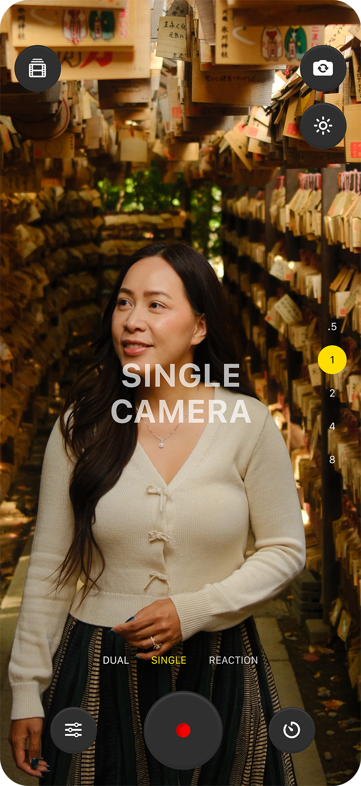

One take, two orientations
9:16 for Reels, Shorts and TikTok. 16:9 for YouTube. Both files captured from the exact same moment.
Dual Creator Cam
One take. Two formats. Record 9:16 vertical and 16:9 horizontal video at the same time — built for everyone posting to Reels, Shorts, TikTok and YouTube.
Download on the App Store
9:16 for Reels, Shorts and TikTok. 16:9 for YouTube. Both files captured from the exact same moment.
Both files captured at the highest quality your iPhone supports. No compromises for the convenience.
Zoom presets, composition grid, start delay, quality picker. Everything you need, nothing you don’t.
Both finished files land in Photos automatically, ready to drop into your editor. No accounts. No cloud.